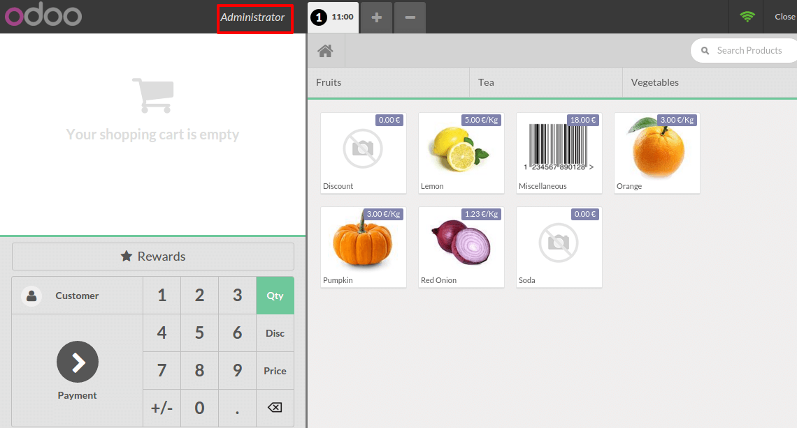

This tutorial will describe how to manage multiple cashiers. There are four differents ways to manage several cashiers.
无需安全设置在转换钱箱
As prerequisite, you just need to have a second user with the Point of Sale User rights (Under the menu). On the Dashboard click on New Session as the main user.

在屏幕上方点击**用户名称**。
并且转换到另外一个钱箱。

The name on the top has changed which means you have changed the cashier.

使用pin码转换钱箱
配置
If you want your cashiers to need a pin code to be able to use it, you can set it up in by clicking on Settings.

然后点击**管理登陆权限**。

[UNKNOWN NODE problematic]编辑**钱箱并在**销售点**页面添加安全pin码。

变更钱箱
在**仪表盘**点击**新的会话**。

在屏幕上方点击**用户名称**。

选择你的**钱箱**：

You will have to insert the user's pin code to be able to continue.

Now you can see that the cashier has changed.

Switch cashier with cashier barcode badge
配置
If you want your cashiers to scan its badge, you can set it up in by clicking on Settings.

Then click on Manage access rights

Edit the cashier and add a security pin code on the Point of Sale tab.

小技巧
Be careful of the barcode nomenclature, the default one forced you
to use a barcode starting with 041 for cashier barcodes. To change that
go to .
变更前箱
在**仪表盘**点击**新的会话**。

在屏幕上方点击**用户名称**。

When the cashier scans his own badge, you can see on the top that the cashier has changed.
给用户分配一个会话
Click on the menu .

Then, click on New and assign as Responsible the correct cashier to the point of sale.

When the cashier logs in he is able to open the session

把默认销售点赋予一个钱箱
If you want your cashiers to be assigned to a point of sale, go to .

Then click on Manage Access Rights.

Edit the cashier and add a Default Point of Sale under the Point of Sale tab.